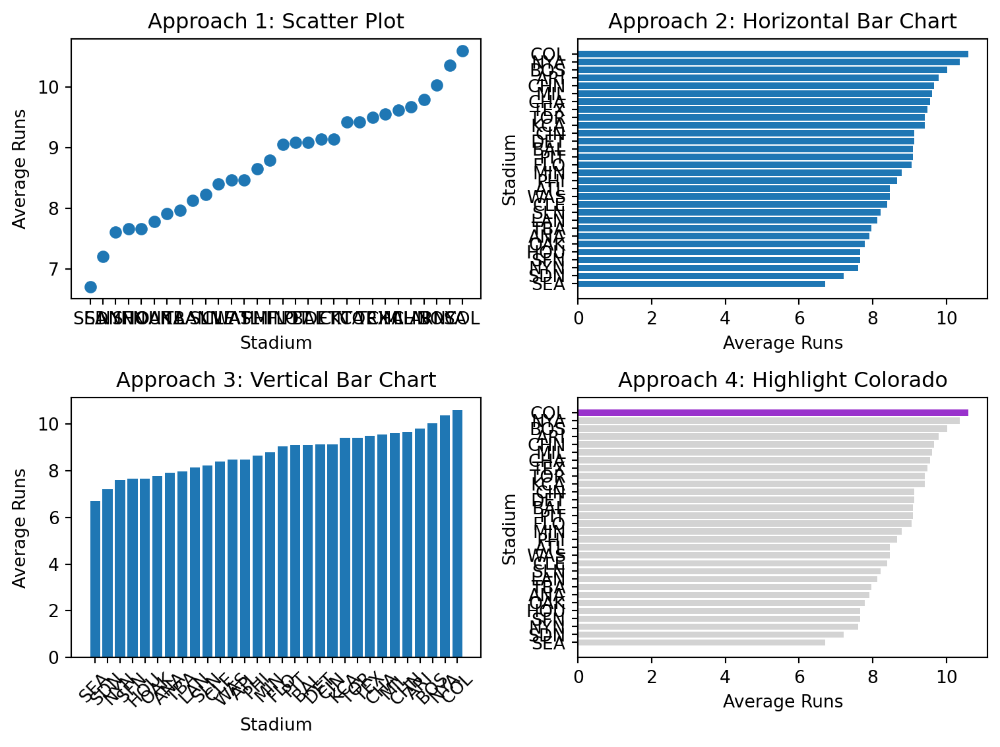
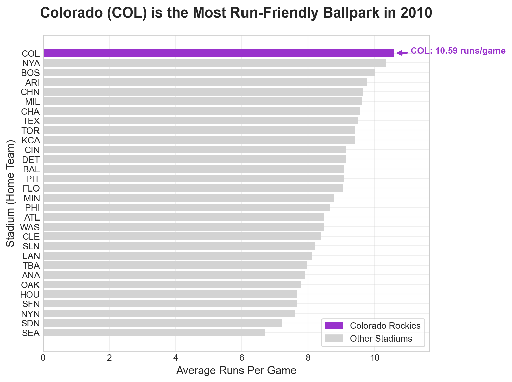
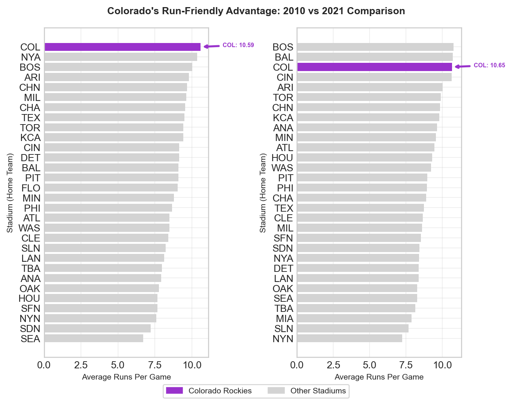

2010 data shape: (2430, 7)
2021 data shape: (2429, 7)
2010 data columns: ['date', 'visiting', 'home', 'visScore', 'homeScore', 'visHR', 'homeHR']
First few rows of 2010 data:
date visiting home visScore homeScore visHR homeHR
0 20100404 NYA BOS 7 9 2 1
1 20100405 MIN ANA 3 6 1 3
2 20100405 CLE CHA 0 6 0 2
3 20100405 DET KCA 8 4 0 1
4 20100405 SEA OAK 5 3 1 0Object-Oriented Matplotlib Challenge
Mastering the Four Stages of Data Visualization
Data and Business Context
We analyze Major League Baseball stadium data to investigate whether Coors Field in Denver, Colorado is truly the most run-friendly ballpark. This dataset is ideal for our analysis because:
- Real Business Question: Sports analysts and fans want to understand stadium effects on scoring
- Clear Hypothesis: High altitude should make Coors Field more run-friendly
- Multiple Metrics: We can analyze both total runs and home runs
- Visualization Practice: Perfect for demonstrating all four stages of visualization
Hypothesis Formation High altitude can significantly affect baseball performance because the air is thinner at higher altitudes. This has different imnpact on pitchers and hitters. For pitchers, less movement for the pitches and for hitters, the ball travels farther once it is hit. Mostly, this leads to higher scoring games. Coors Field is affected by high altitude because it is located at a high altitude in Denver, Colorado.
Important🤔 Discussion Questions: Stage 1 - Declaration of Purpose
Coors Field - Denver, CO : Is it the most run-friendly stadium? A 2021 vs 2020 comparative study: Question 1: Hypothesis Formation - Why might high altitude affect baseball performance? Is Coors Field affected by high altitude? Our purpose is to investigate whether Coors Field in Denver, Colorado is truly the most run-friendly baseball stadium in Major League Baseball.
Stage 2: Curation of Content
Let’s aggregate the data to get average runs per stadium:
2010 Stadium Averages (Top 5):
home visScore homeScore visHR homeHR totalRuns totalHR
0 ANA 3.975309 3.938272 0.839506 0.851852 7.913580 1.691358
1 ARI 5.049383 4.740741 1.271605 1.209877 9.790123 2.481481
2 ATL 3.641975 4.827160 0.740741 0.913580 8.469136 1.654321
3 BAL 5.111111 3.975309 1.308642 0.888889 9.086420 2.197531
4 BOS 4.851852 5.172840 0.876543 1.209877 10.024691 2.086420
2021 Stadium Averages (Top 5):
home visScore homeScore visHR homeHR totalRuns totalHR
0 ANA 4.925926 4.703704 1.283951 1.296296 9.629630 2.580247
1 ARI 5.456790 4.555556 1.246914 0.851852 10.012346 2.098765
2 ATL 4.400000 5.050000 1.200000 1.450000 9.450000 2.650000
3 BAL 6.259259 4.469136 1.913580 1.506173 10.728395 3.419753
4 BOS 4.962963 5.802469 1.111111 1.333333 10.765432 2.444444
Important🤔 Discussion Questions: Stage 2 - Curation of Content
Question 1: Data Aggregation Strategy - How many games are in the dataset? Why do we aggregate individual games into stadium averages before we start the visualization process?
There are 2430 games in the 2010 dataset ; and 2429 games in the 2021 dataset.
Aggregating the total runs and home runs and then taking the average per game for each stadium will help us compare the total runs and home runs across all stadiums. Since it is difficult to do this comparison by looking at total runs and home runs across the stadiums from each individual game. This will also help us see which stadium is the most run-friendly.
Stage 3: Structuring of Visual Mappings
Let’s explore different visual approaches to compare the average runs per game across all stadiums:

Important🤔 Discussion Questions: Stage 3 - Structuring of Visual Mappings
Question 1: Geometry Choices - Why is a horizontal bar chart better than a scatter plot for this data? Average runs is a numerical data, and stadium is a categorical data. A horizontal bar chart is better than a scatter plot for this data because we can clearly see the average runs for each stadium as opposed to scatter plot where firstly, it is difficult to get an accurate value of the average runs for each stadium and secondly, visually compare the average runs across stadiums.
- When would you choose a vertical bar chart over horizontal? We can chose vertical bar chart when the number of categories is < 12 for better readability. Also, in cases where we want to display time-series or ordinal data, vertical bar charts give a better visual read than horizontal bar charts.
Question 2: Aesthetic Mappings - What does the color highlighting accomplish in Approach 4? Color highlighting in approach 4 helps business users / analysts to quickly draw a conclusion that the stadium COL has seen highest average runs scored per game in the year 2010.
- How does position (x/y) compare to color for encoding data? Position can handle ordinal data, while color cannot. Position has capacity to accommodate infinte cardinality while color is good only for 12 or less cardinal values. position is best for most important data, while color (discrete) is best for categorical data with small number of values. So in this case, position plotting tells us the story in a better way.
Stage 4: Formatting for Your Audience
Let’s create a publication-ready visualization:

Summary Statistics for 2010:
Colorado (COL) average runs per game: 10.59
League average runs per game: 8.77
Colorado is 20.8% above league average
Important🤔 Discussion Questions: Stage 4 - Formatting for Your Audience
Question 1: Professional Formatting - What elements make this visualization suitable for a business presentation? Answer: 1. The Title is very helpful for business to come to a conclusion on which standium is the most run-freindly ballpark in 2010, which is one of the most important business questions we had. 2. All the stadiums are listed in y-axis and the avg runs per game against it in a bar format. This makes it easy to read and compare runs scoring between different stadiums. 3. color coding of the best run scoring stadium which is helpful to distinguish COL from all other stadiums, even the other high scoring ones. 4. the legend which labels the color coding - Colorado Rockies vs Others 5. The ticks on x-axis are scaled appropriately, which makes it easier to derive avg runs scored against a stadium. - Is the annotation on the visualization helpful? Can you fix its placement? Answer: In the current visualization No, since it not pointing correctly to the bar corresponding to Colorado stadium. Yes, we can fix the placement. We updated the above code by adding up_offset = 20 to xy and xytext, and it fixed the issue.
Advanced Object-Oriented Techniques
Let’s create a comprehensive comparison between 2010 and 2021:

Comparison Statistics:
Colorado 2010: 10.59 runs/game
Colorado 2021: 10.65 runs/game
Change: +0.06 runs/game
League average 2010: 8.77
League average 2021: 9.06
Colorado advantage 2010: 20.8%
Colorado advantage 2021: 17.6%
Important🤔 Discussion Questions: Advanced Object-Oriented Techniques
Question 1: Using Subplot Layout - Create a two-facet visualization that shows the total runs for 2010 and 2021 for each stadium in a single figure. Highlight Colorado in the visualization.
Question 2: Explanation of the Visualization
This subplot visualization demonstrates Colorado’s slip from its dominance as the most run-friendly ballpark between the years 2010 and 2021 selected for comparison of performance of the parks. The side-by-side comparison reveals several key insights: First, Colorado was the highest-scoring stadium in the year 2010 with 10.59 runs/game, but slipped to 3rd place as of 2021 despite showing a slight increase in runs/game to 10.65, as shown using purple highlighting and annotations in the subplots. The horizontal bar chart format allows for easy comparison of all stadiums while maintaining readability of team abbreviations. The visualization answers the core business question by showing that Colorado was the top run-friendly stadium in the past (as per 2010 data) but not anymore (as per 2021 data). It is succeeded by Baltimore Orioles (BAL) and Boston Red Sox (BOS), which are the new top run-friendly stadiums as of 2021.
- Does AI come to the right conclusion? If not, why not?
No, AI comes to the wrong conclusion. It incorrectly concludes that Colorado as the stadium with the highest average runs per game in both 2010 and 2021. However, the visualization clearly shows that Colorado slipped to 3rd place as of 2021 despite showing a slight increase in runs/game to 10.65. Boston Red Sox (BOS) tops the list with 10.87 runs/game and Baltimore Orioles (BAL) is in 2nd place with 10.78 runs/game.